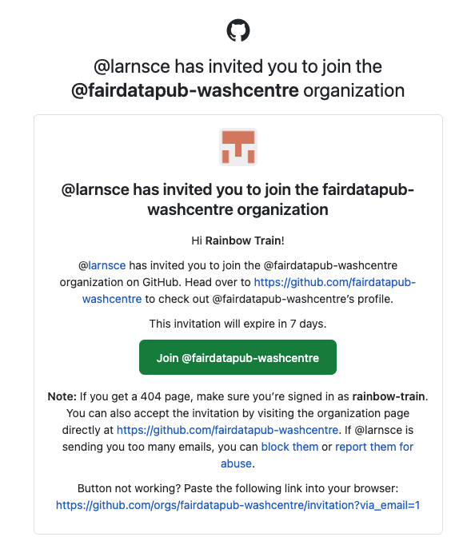

01:00
Welcome & get ready for the workshop
FAIR Data Publishing
Email from GitHub?
While we are getting ready, please check for this email from GitHub and accept the invitation to join the GitHub organisation for the course. Used Gmail to sign up? Check the folders that aren’t your primary inbox (e.g Updates).

Welcome! 👋
Learning Goals (for the course)
Be able to use a common set of data science tools (R, RStudio IDE, Git, GitHub, tidyverse, Quarto) to illustrate and communicate the results of data analysis projects.
Learn to use the Quarto file format and the RStudio IDE visual editing mode to produce documents with citations, footnotes, cross-references, figures, and tables.
Be able to design a questionnaire to collect information that can be analysed to answer a waste-related research question that is relevant for Zurich.
Understand the main challenges associated with managing different types of waste, and how they differ between Europe and Africa.
Why all of this?


Your turn: About you
Pick an item and take notes for 1 minute:
What does the item you have picked have to do with the reason for you being here?

In pairs
Take 2 minutes each to share with your partner:
What does the item you have picked have to do with the reason for you being here?
05:00
Course structure
- My turn: Lecture segments + live coding
- Our turn: Live coding + follow along
- Your turn: Exercises in pairs
My turn: Lecture segments + live coding
- Instructor writes and narrates code out loud
- Instructor explains concepts and principles that are relevant
- Code is displayed on screen
Our turn: Live coding + follow along
- Instructor writes and narrates code out loud
- Instructor explains concepts and principles that are relevant
- Code is displayed on screen
- Learners join by writing and executing the same code
Your turn: Exercises in pairs
- Two learners work together in pairs
- One person does the typing (the driver)
- One person offers comments and suggestions (the navigator)
Getting help
please use a pink sticky note to indicate that you have a problem. I will try to address your issue if time permits.
during your turn exercises, please use a yellow sticky note to indicate when you have completed an exercise.
Platforms and Tools
- Course website
- R
tidyverseR PackageswashrR Package- Posit Cloud
- RStudio IDE
- Git / GitHub
Course website
Our turn: Open and bookmark the course webiste
- Open a web browser on your laptop.
- Navigate to the course website: fairdatapub-washcentre.github.io/website/
- Create a bookmarks folder named fairdatapub-washcentre in your bookmarks toolbar
- Add a bookmark of the course website to the folder fairdatapub-washcentre
05:00
Learning Objectives (for this week)
#
# lobj <- readr::read_csv(here::here("data/tbl-01-fairdatapub-washcentre-learning-objectives.csv")) |>
# dplyr::filter(module == params$module) |>
# dplyr::pull(learning_objectives)
Artwork from @juliesquid for @openscapes (illustrated by @allison_horst)
Version Control
Version Control with Git and GitHub
A way to share files with others, so they can:
- download
- re-use
- contribute
You can view the history of files, and jump back in time to any point.
Why is it useful?

Git and GitHub

- Git is a software for version control
- Created in 2005
- Popular among programmers collaboratively developing code
- Tracks changes in a set of files (directory/folder/repository)

GitHub is a hosting platform for version control using Git
Launched in 2008, aquired by Microsoft in in 2018, Microsoft for US$ 7.5 billion
100 million Users (20.5 in 2022 alone) (October, 2023)
Social media for software developers
My turn: A tour of GitHub
Sit back and enjoy!
Your turn: Get a GitHub account (if you haven’t yet)
- Open a web browser on your laptop.
- Navigate to the course website: fairdatapub-washcentre.github.io/website/
- If you haven’t yet, bookmark the course website
- In the left-hand menu, clock on Module 1, then select am-01: GitHub
- Follow the instructions
- Place a yellow sticky note on your laptop when you have completed the assignment
05:00
Email from GitHub?
Please check for this email from GitHub and accept the invitation to join the GitHub organisation for the course. Used Gmail to sign up? Check the folders that aren’t your primary inbox (e.g Updates).
Posit Cloud
-
-
-
-
-
-
-
Your turn: Log into Posit Cloud with GitHub account
- Open a web browser on your laptop.
- Navigate to the course website: fairdatapub-washcentre.github.io/website/
- If you haven’t yet, bookmark the course website
- In the left-hand menu, clock on Module 1, then select am-02: Posit Cloud
- Follow the instructions
- Place a yellow sticky note on your laptop when you have completed the assignment
GitHub Authorisation
- If this is your first time logging in to Posit Cloud with your GitHub account, you will be prompted to authorize Posit Cloud to access your GitHub account information.
- Once you have authorized access, you will be redirected back to the Posit Cloud website and logged in to your account.
05:00
Take a break
Please get up and move! Let your emails rest in peace.

countdown(minutes = 15)15:00
Photo by Blake Wisz
Your turn: md-01-exercises
- Open posit.cloud in your browser (use your bookmark).
- Open the rbt-fs24 workspace for the course.
- Click Start next to md-01-exercises.
- In the File Manager in the bottom right window, locate the
hello-quarto.qmdfile and click on it to open it in the top left window. - Render the document.
- Add your name to the
author:key in the YAML header - Render the document
- Inspect components of the document and make one more update and re-render.
- Discuss notes about updates you’ve made with your neighbor. Note any aspects of the document that are not clear after the tour and your first interaction with it.
Take a break
Please get up and move! Let your emails rest in peace.
countdown(minutes = 15)15:00
Photo by Blake Wisz
Module 1 documentation
Wrap-up
Thanks! 🌻
Slides created via revealjs and Quarto: https://quarto.org/docs/presentations/revealjs/ Access slides as PDF on GitHub
All material is licensed under Creative Commons Attribution Share Alike 4.0 International.